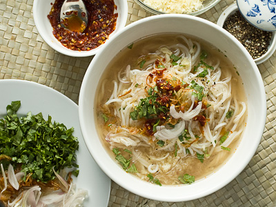
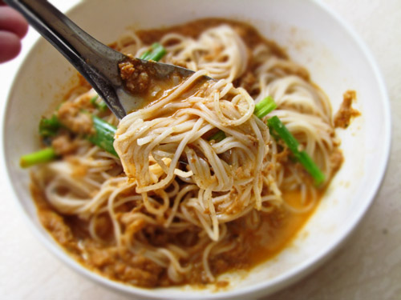

Rakhine Mone-Ti
Ingredients
- thin rice noodles 1. 6 kg
- pike conger 400 g
- (nga-shwe) oil 320 g
- turmeric a dash
- ginger 2. 5 cm
- garlic sliced 320 g
- onion sliced 320 g
- greater galangal 80 g
- (pade-gaw)
- shrimp paste 3 tsp
- pepper 1/2 tsp
- chili powder 2 tbs
- tamarind 80 g
- salt to taste
- coriander leaves 160 g
- Water to make 15 cups
Instructions
- Boil fish till tender together with ginger and salt in water to just cover the fish. Debone the fish and slightly squeeze out the water when mashing it with the turmeric, and roast on slow fire in one tablespoon of oil till the fish becomes grainy. This is the fish garnish.
- Strain the liquid in which the fish has been boiled, add shrimp paste and boil for 40'. Cool and let the solids settle. Take only the clear liquid. Place the roughly ground galangal together with 160 g of crushed garlic in a muslin bag in the liquid, add the pepper and boil 30' filling up with water to get 15 cups of liquid. This is the clear soup to serve ten persons.
- Fry the remaining 160 g of sliced garlic in oil and remove the garlic into a dish adding 4 tbs of the cooked oil. This is the garlic garnish.
- Fry the onion in the remaining oil till golden. Strain into another dish. This is the onion garnish.
- Make paste of chili powder in 2 tbs of water and cook in the frying oil till the water evaporates. This is the chili sauce.
- Dissolve the tamarind in warm water to form a thick sauce.

- Take noodles. Add roasted fish, tamarind sauce, chili sauce, fried garlic in oil, fried onions and coriander leaves and mix thoroughly. Serve soup in a separate bowl.
- Alternately put all the above ingredients in a bowl and pour the soup into the bowl. This is served as Rakhine mone-ti.
